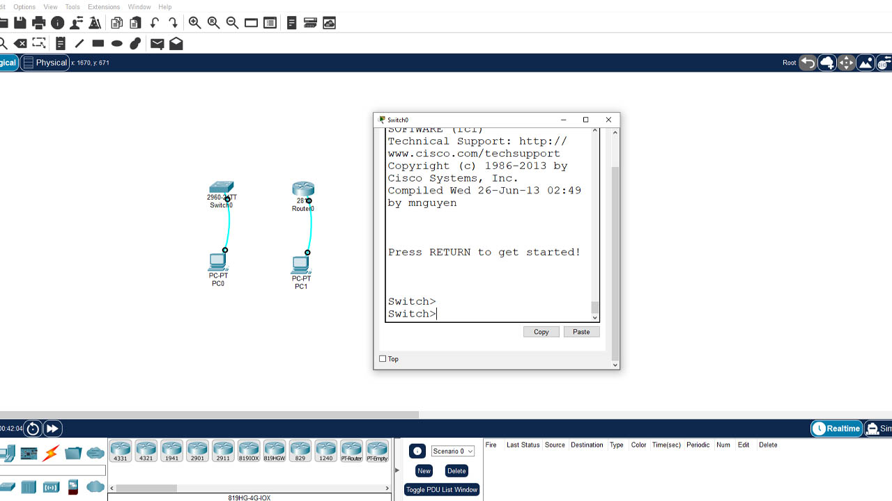
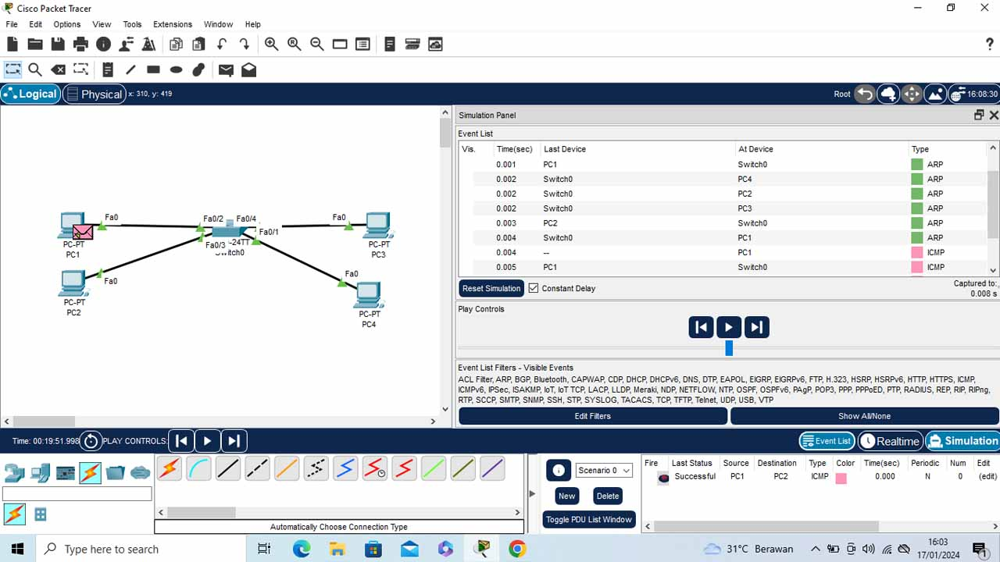
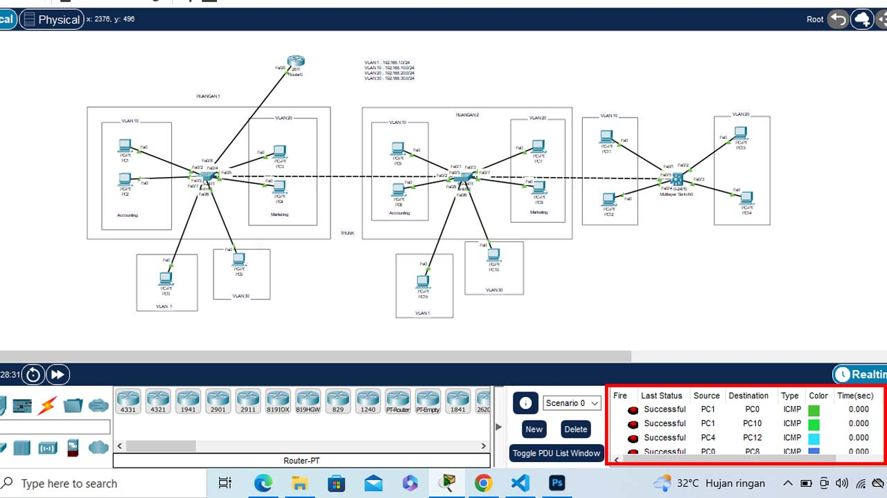
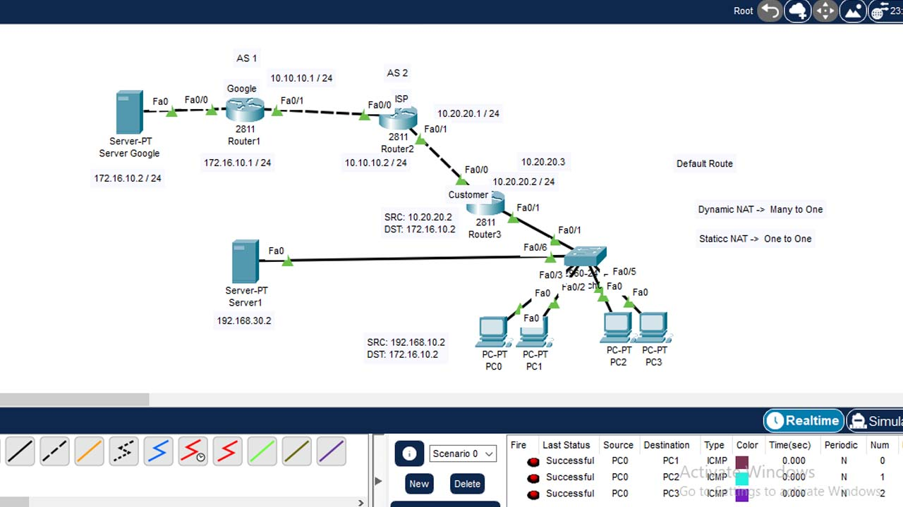

CISCO CCNA 200-301 merupakan online course dari Aguna Course, course ini langkah awal yang penting dalam membangun karir dalam bidang IT, untuk mengetahui dan menambah keterampilan praktis dalam desain, implementasi, dan administrasi jaringan yang terdiri dari perangkat Cisco. Ini mencakup berbagai topik yang terkait dengan jaringan, termasuk routing, switching, security, wireless networking, dan lebih banyak lagi.
tampilan configurasi pada cisco router dan cisco switch menggunakan consule dan Config

User Mode
- enable: Pindah ke mode privileged mode
- exit: Keluar dari mode saat ini atau keluar dari terminal
Privileged Mode
- configure terminal atau conf t: Memasuki mode konfigurasi global
- show running-config: Menampilkan konfigurasi aktif
- show startup-config: Menampilkan konfigurasi yang akan diload saat perangkat di-restart
- reload: Meng-restart perangkat
- copy running-config startup-config: Menyimpan konfigurasi yang sedang berjalan ke konfigurasi startup
Global Config
- interface [tipe_interface][nomor_interface]: Masuk ke mode konfigurasi interface
- hostname [nama]: Mengganti nama perangkat
- ip routing: Mengaktifkan routing di perangkat
pada hal ini berbeda pada sebelumnya, yang mana sebelumnya mengconfigurasikan pada Packet Tracer dan yang ini mengconfigurasikan
IP Address pada Cisco Router yang artinya bisa dibilang mengconfigurasikan secara real device menggunakan CLI (Command Line Interface)
- Hal pertama saat melakukan configurasi pada case ini masuk ke menu CLI terlebih dahulu
- lalu aktifkan Fa0/0 dan Fa0/1 dengan perintah int Fa0/0 dan Fa0/1, ketikan no shutdown
- setalah Fa0/0 dan Fa0/1 sudah hijau/aktif, masukan IP Address dan Subnetmask pada Router
IP Router yang digunakan akan di samakan dengan Gateway pada tiap-tiap komputer yang akan di konfigurasikan
Mac Address ini merupakan bagian dari TCP/IP Model pada layer 2 yaitu Data Link berbeda dengan IP Address yang berada pada layer 3 di TCP/IP
Model yaitu Network.
untuk melihat Mac Address agar saling berkomunikasi dengan device lainnya, harus melakukan ping terlebih dahulu
melalui CMD, setelah itu lakukan perintah ap -a pada CMD, akan muncul Arp Table yang berisi IP Address dan Physical Adderss atau disebut juga Mac Address.
dan melihat Mac Address pada Router, Switch dan Komputer bisa melakukan perintah ipconfig /all pada CMD
Gambar dibawah ini merupakan Topology 3 PC 1 Switch
jadi bisa dilihat CLI pada switch0 saling terhubung pada Komputer 1 Fa/02 dan Komputer 2 Fa/03 dan terdapat Mac Addressnya.
dan kenapa switch tidak memberikan informasi ke Komputer 3? hal ini dikarnakan Komputer 3 belum melakukan komunikasi dengan siapapun melalu ping
Gambar dibawah ini merupakan ARP Table pada Komputer dan Switch
pada gambar sebelumnya dalam mode realtime, jadi gambar dibawah ini dalam mode simulation untuk melihat informasi panel saat mengirimkan
packet dari type ARP & ICMP pada device switch dan komputer.
pada gambar dibawah merupakan Topology interface berada pada 1 VLAN yang sama, bisa diliat switch membroadcast ke semua komputer
 bisa dilihat dibawah ini memebuktikan bahwa beberapa interface komputer berada pada 1 Vlan.
selanjutnya akan membuat 2 Vlan, 1 Vlan untuk divisi Accounting, 1 Vlan untuk divisi Marketing.
2 Vlan sudah terbentuk dengan Vlan 10 untuk divisi Accounting dan Vlan 20 untuk divisi Marketing
namun seuluruh interface komputer atau ports masih berada pada Vlan 1, kita bisa lihat dibawah ini bahwa fa0/2 berada
pada PC 1, fa0/3 di PC 2, fa0/4 di PC 3, fa0/1 di PC 4,
selanjutnya akan membagikan 2 PC untuk ke Vlan 10 Divisi Accounting dan 2 PC untuk Vlan 20 Divisi Marketing.
pada gambar dibawah ini sudah terbagi 2 Vlan, 1 Vlan untuk divis Accounting, 1 Vlan untuk divisi Marketing yang sudah
terhubung, tiap Vlan-nya memiliki 2 interface komputer atau ports, untuk memasukan interface/ports dengan cara melakukan
perintah pada CLI pada switch
pilih ports yang ingin dimasukan: int fa0/1
lalu, Switchport mode access
masukan ke Vlan yang di inginkan: switchport accsees vlan 20
jadi ketika sudah membuat 2 Vlan, antar Vlan 10 dan Vlan 20 memang tidak bisa saling berkomunikasi, yang bisa saling berkomunikasi hanya berada 1 Vlan yang sama
Lalu bagaimana agara antar Vlan bisa Saling berkomunikasi walaupun berbeda ruangan?
untuk bisa saling berkomunikasi antar Vlan menggunakan Trunk,
Trunk merupakan interface yang bisa melewatkan banyaknya Vlan,
karna sebelumnya antar Vlan tidak bisa saling berkomunikasi.
berikut gambar dibawah ini Topology 2 Ruangan yang bisa saling berkomunikasi
antar Vlan dengan ruangan berbeda, caranya melakukannya
Jaringan Switch FA0/5 terlebih dahulu masukan kedalam trunk dengan melakukan perintah
di CLI switch 1 dan switch 2, ketikan: interface FA0/5, lalu: switchport mode trunk, dan Switch 1 dan Switch 2 harus terhubung dengan kabel utp.
gambar dibawah ini Topology 3 Ruangan yang memiliki 4 Vlan yang berbeda namun bisa saling berkomunikasi antar Vlan, agar antar Vlan bisa saling berkomunikasi, Network Vlan harus berbeda-beda. tambahkan terlebih dahulu Router lakukan konfigurasi router, Vlan, atau FA yang terhubung pada switch, setelah itu konfigurasi tiap-tiap komputer sesuaikan pada gateway yang sudah ditentukan oleh vlan
 pada case ini berbeda dengan sebelumnya, dikarnakan case sebelumnya mengconfigurasikan secara manual melalu static
pada tiap-tiap komputer, dan case ini mengconfigurasikan secara otomatis atau disebut juga dengan DHCP,
berikut langkah pertama yang harus dilakuakan:
Konfigurasi VLAN dan Trunking pada switch 1 dan switch 2, dengan cara membuat VLAN 10, 20, 30 berserta namanya.
setelah itu masukan interface fa0/3 (jaringan kabel yang menghubungkan anatara switch dan komputer) kedalam VLAN.
kemudian Konfigurasi Inter VLAN pada Routing, konfigurasi router dengan memasukan subif vlan, setelah itu
masukan IP Address dan Subnetmask yang sudah ditentukan pada VLAN
TOPOLOGY 4 SWITCH DAN 8 VLAN
lakukan konfigurasi vtp terlebih pada Switch 1 pada CLI dengan melakukan
vtp mode server, vtp domain AGUNACOURSE, vtp password 123. SWITCH 1 akan menjadi
Server, SWITCH 2,3,4 menjadi Client, setelah melakukan konfigurasi vtp, lakukan konfigurasi
VLAN dan Trunk pada Switch 1 saja, Switch 2,3,4 akan otomatis mengikut, itulah fungsi VTP.
selanjutnya Konfigurasi Interface Access pada VLAN 10 sampai VLAN 80 yang terhubung pada tiap tiap-tiap
switch, setalah itu konfigurasi inter VLAN Routing di router pada semua VLAN. selanjutnya Konfigurasikan
DHCP Server pada Router agar memasukan IP Address dan IP Gateway tidak secara manual melainkan otomatis pada
seluruh komputer dengan cara masuk CLI pada router perintahkan: ip dhcp pool VLAN10 (atau vlan yang dinginkan),
Netwok 192.168.10.0 255.255.255.0 (atau vlan yang dinginkan), defaul-router 192.168.10.1 (bertujuan untuk IP gatewaynya.
maka pada Study Case pada gambar dibawah dengan TOPOLOGY 4 SWITCH DAN 8 VLAN, satu sama lain bisa saling berkomunikasi.
Port Security merupakan suatu keamanan jaringan yang dipakai pada Switch Cisco yang berfungsi untuk
membatasi jumlah host dan menentukan host lain yang bisa terkoneksi pada setiap port yang ada di switch,
Dengan menggunakan switch port security akan mencegah akses dari perangkat tak dikenal dari pihak tak bertanggung jawab.
gambar Topology dibawah ini case pada suatu port security
cara untuk melakukan port security pada switch: masuk ke CLI pada switch, karna ingin mengamankan port pada server 1 maka masukan fa0/1
lakukan perintah switchport mode access, lalu switchport port-security
setelah masuk ke port security, masukan mac address yang ada di server pada fa0/1, dengan perintah switchport port-security mac-address 00E0.B03D.BD14,
switchport port-security maximum 1, yang artinya jumlah komputer yang valid pada interface tersebut, setelah itu perintahkan
switchport port-security violation shutdown, yang artinya ketika ada device tak dikenal / hacker yang ingin mencoba terhubung komunikasi pada switch,
maka jaringan fa0/1 akan ter-shutdown.
Spanning Tree Protocol (STP) layanan yang memungkinkan LAN switch dan LAN bridge terinterkoneksi secara berlebih dengan cara menyediakan
mekanisme untuk mencegah loop yang tidak diinginkan dalam jaringan yang terjadi pada bridge.
Gambar dibawah ini Topology Sederhana pada Spanning Tree Protocol (STP)
Etherchannel merupakan gabungkan beberapa kabel UTP yang mana antar switch saling terhubung namun
kabelnya memeiliki lebih dari satu, menjadi 1 virtual kabel. jadi secara fisik memiliki lebih dari satu kabel,
secara logical atau system hanya 1 kabel. karna kalo tidak menggunakan Etherchannel beberapa kabel port akan terblock secara otomatis.
Gambar dibawah ini Topology Sederhana pada Etherchannel
untuk melakukan Configurasi Etherchannel: lakukan perintah di CLI switch, int rang fa0/1-3, switchport mode trunk, setelah itu
channel-group ?, channel-group 1 ?, channel-group 1 mode ?, lalu pilih active atau passive, channel-group 1 mode active.
untuk pengujuan Etherchannel, bisa lakukan perintah, do show etherchannel sum.
Note: Warna Orange terblock belum di configurasi Etherchannel.
Warna Hijau sudah di configurasi Etherchannel.
Static Routing (Routing Statis) sebuah router yang memiliki tabel routing static yang disetting secara manual oleh para
administrator jaringan. Menggunakan routing statis dalam sebuah jaringan berarti mengisi setiap entry dalam forwarding table di
setiap router yang berada di jaringan tersebut.
Gambar dibawah ini Topology Static Routing 4 Router, 1 Switch, 8 Komputer
agar seluruh device satu sama saling saling berkomunikasi, maka lakukan Static Routing terlebih dahulu, yang mana
setiap Ip, Gateway, Vlan harus diinput terlebih dahalu ditiap tiap Router
ACL atau Access Control List adalah fitur yang digunakan dalam jaringan komputer dan sistem operasi untuk mengatur dan mengontrol lalu lintas jaringan berdasarkan kriteria tertentu.
ACL digunakan untuk mengizinkan atau memblokir paket data berdasarkan alamat IP, protokol, port, atau kriteria lainnya. ACL umumnya digunakan pada router,
switch, dan firewall untuk mengimplementasikan kebijakan keamanan jaringan.
Gambar dibawah ini Topology Access Control List 2 Router, 2 Switch, 3 Server, 6 Komputer
pada case ini kurang lebih sama dengan mengconfigurasikan VLAN Trunking Protocol yang membedakan hanya saat Configurasi Router 1, dan Router 2
yang mana Router harus mengconfigurasikan OSPF dengan cara perintahkan di CLI: router ospf 1, network 10.10.10.0 0.0.0.3 area 0,
nnetwork 192.168.10.0 0.0.0.255 area 0, network 192.168.20.0 0.0.0.255 area 0, network 192.168.20.0 0.0.0.255 area 0.
ini menujunkan bahwa sekarang seluruh VLAN sudah bisa ping atau berkomunikasi dengan Server
NAT atau Network Address Translation bertujuan mentranslate IP address dalam case atau Topology dibawah ini
akan menstranslate IP pada router 3 yaitu router coustomer dengan source IP 192.168.10.2 setelah melewati
NAT atau Network Address Translation di Router 3 source IP 192.168.10.2 menjadi IP Public yaitu 10.20.20.2,
setelah itu paket IP tersebut di kirimkan ke ISP Router 2 dan akan di tersukan ke router atau server google.
lalu untuk Router 3 Customer agar bisa saling PING ke Server Google, lakukan Konfigurasi Default Route di Router 3 dengan perintah di CLI:
ip route 0.0.0.0 0.0.0.0 10.20.20.1 (IP dan Subnetmask 0.0.0.0 0.0.0. yang artinya semua network yang ada di internet)
untuk bisa terhubung ke internet pada Komputer/Client harus melakukan konfigurasi NAT di Router 3 dengan cara
access-list 1 permit 192.168.10.0 0.0.0.255 & 192.168.10.0 0.0.0.255 lalu ip nat inside source list 1 interface fa0/0 overload,
int fa0/0, ip nat outside, int fa0/1.10, ip nat inside, int fa0/1.20, ip nat inside.
konfigurasi Web Server 1 yang terhubung ke switch dengan masukan fa0/6 ke Vlan 30, lalu konfigurasikan Sub-Interface di
Router 3 dengan perintah d CLI: int fa0/1.30, encapsulation dot1Q 30, ip address 192.168.30.1 255.255.255.0, lalu memasukan
Ip Server 1 dengan IP 192.168.30.2 Subnetmask 255.255.255.0, Gateway 192.168.30.1.

dan sekarang seluruh PC/Client pada Vlan 10 dan Vlan 20 sudah bisa mengakses Web Server dan sudah berfungsi, untuk
seluruh Web Server bisa di akses melalui Internet, harus melakukan konfigurasi Static NAT terlebih dahulu di Router 3
dengan perintah di CLI: Ip nat inside source static 192.168.30.2 10.20.20.3 yang artinya mentranslate IP Publik ke IP Private,
setelah itu pernitah int fa0/1.30, ip nat inside.
ACL atau Access Control List adalah fitur yang digunakan dalam jaringan komputer dan sistem operasi untuk mengatur dan mengontrol lalu lintas jaringan berdasarkan kriteria tertentu.
ACL digunakan untuk mengizinkan atau memblokir paket data berdasarkan alamat IP, protokol, port, atau kriteria lainnya. ACL umumnya digunakan pada router,
switch, dan firewall untuk mengimplementasikan kebijakan keamanan jaringan.
Konfigurasi IPv6 Address
lakukan perintah di CLI pada tiap-tiap Router, lakukan perintah int fa0/0, No Shutdown, ipv6 address 2001:db8:10::1/64,
int fa0/1, No Shutdown, ipv6 address 2001:db8:1::1/64, setelah itu lakukan konfigurasi pada PC dengan memilih IPv6 masukan
IP 2001:DB8:1::2/64 dan Gateway 2001:DB8:1::1
lakukan hal tersebut di setiap router dan sesuaikan Intreface yang terhubung.
Konfigurasi Static Routing IPv6
untuk melakukan Konfigurasi Static Routing lakukan perintah pada Router 1 di CLI: ipv6 route 2001:db8:2::/64 2001:db8:10::2,
ipv6 route 2001:db8:20::/64 2001:db8:10::2, ipv6 route 2001:db8:3::/64 2001:db8:10::2 dalam hal ini Router 1 mengconfigurasi
IP Network dan Gateway ke tiap-tiap Interface dan PC yang terhubung
lakukan hal tersebut di setiap router dan sesuaikan Intreface yang terhubung.
{kind=link}
{kind=link}
{kind=link}
{kind=link}
{kind=link}
{kind=link}
{kind=link}
{kind=link}
{kind=link}
{kind=link}
{kind=link}
{kind=link}
{kind=link}
{kind=link}
{kind=link}
{kind=link}
{kind=link}
{kind=link}
{kind=link}
{kind=link}